Читать сверху вниз — это весь игровой поток по порядку. Верх кадра = экран 1920×1080, серая панель внизу = что делают руки. Кнопка «в меню» из любого кадра — мгновенный выход в лаунчер.
Старт
1 · Титул
Игра запущена из лаунчера (удержание джойстика). Фоном дрейфуют мысли. Старт — два оборота динамо: игра начинается с медленного кручения.
2 · Карточка уровня (2.5 с, авто)
Название уровня, силуэт сосуда (портфель) и 5 пустых слотов — что предстоит собрать. Автопереход в уровень.
3 · Обзор сцены (intro, 2 с)
Мыслей нет, все 5 деталей разом пульсируют — игрок «оглядывает» локацию. Дальше пульс тише, детали надо замечать самому.
Обучение — только на уровне 1, таймер стоит
4 · Обучение, бит 1: «Крути ручку!»
Первая деталь (одуванчик) уже «замечена» за игрока — нить к сосуду протянута. Мысли не спавнятся, таймер стоит (солнце бледное). Игра ждёт первого кручения.
5 · Крутим — деталь едет
Непрерывное медленное вращение тащит деталь по нити. Вокруг детали кольцо прогресса: зелёное, пока кручение выше порога.
6 · Деталь в сосуде
Портфель подпрыгивает (scale 1.0→1.1→1.0, 0.3 с), деталь видна внутри, первый слот в HUD заполнился. Нить исчезла.
7 · Обучение, бит 2: «Тряси джойстик!»
Появилась первая мысль (в арте — плюшевый мишка; на greybox-кадре подписан старый плейсхолдер, прочность 4 пипса). Пока не отбита — дальше ничего не спавнится.
8 · Мысль лопается
Каждый резкий рывок стика в любую сторону = удар, гаснет пипс, мысль вздрагивает. Пипсы кончились — мысль схлопывается. После этого таймер запускается, начинается настоящая игра.
Основная игра — цикл сбора
9 · Обучение, бит 3 → игра: ведём взгляд
Последняя подсказка «Оглядись — наклони стик» показывается один раз. Плавный наклон двигает круг-«взгляд» (r=90, до 900 px/с); резкие рывки — тряска: игра различает по скорости жеста. Таймер теперь идёт (солнце яркое, сектор тает).
10 · Смотрим на деталь
Взгляд накрыл отражение облака и держится. Вокруг взгляда набегает дуга удержания (0.4 с [tune]).
11 · Деталь замечена!
Вспышка, к сосуду протягивается нить. Взгляд больше не нужен — деталь «привязана». Дальше её ведёт только динамо.
12 · Тянем — и врывается мысль
Пока деталь едет, у края выплывает новая мысль (прочность 3). Мысли приходят волнами и дрейфуют, постепенно закрывая сцену, детали и нить.
13 · Главный момент: трясём, продолжая крутить
Правая рука бьёт по мысли (пипс погас), левая продолжает вести деталь. В этом вся игра: тело делит внимание на «медленное» и «резкое» одновременно.
14 · Отпустили ручку — деталь срывается
Кручение упало ниже порога дольше grace-периода: кольцо краснеет, деталь летит на своё место (0.6 с). Прогресс пути потерян [toggle: в ноль / тает]. Деталь остаётся замеченной — нить сохраняется, наводиться заново не надо.
15 · Волны накатывают
Тащим деталь заново, а мыслей уже три, и таймер тает. Чем дольше медлишь — тем больше их скапливается. Прочность и частота растут с уровнями.
16 · Пик хаоса
Сцена почти не видна, сосуд полузакрыт [toggle], края экрана темнеют. Перекрытие ≥ порога [tune] — проигрыш. Успел разгрести — сеттинг проступает обратно.
Исходы уровня — схема (итоговые экраны ниже, Э3–Э4)
17 · Поражение (мысли заполнили экран или время вышло)
Экран закрыт, цвета гаснут. Ретрай тоже медитативный: каждый оборот ручки стирает ~10 % мыслей; расчистил — уровень начинается заново [toggle: авто-ретрай через 4 с].
18 · Победа уровня
Все 5 деталей собраны до конца таймера: мысли растворяются (0.5 с), секунда чистой «тишины», сосуд ×2 в центре со всей добычей. Дальше карточка следующего уровня (как шаг 2).
Старый greybox уровней — только про механику
Кадры 19–22 — старый greybox: нумерация уровней на них устарела (порядок изменён 2026-08-07), смотреть их стоит только как схему поведения. Итоговый вид сцен — в секции «Арт всех уровней» ниже.
19 · Уровень 2 — Библиотека
Сосуд — тканевая сумка на стуле (960,930). Мысли уровня: босс, весы, 99+ уведомлений, будильник…
1луч света с пылинками (960,350)2закладка-перо (820,630)3раскрытая книга (950,620)4засушенный цветок (1040,600)5очки (1290,640)
20 · Уровень 3 — Метро
Сосуд — карман пальто пассажира, стоящего в центре переднего плана (960,930). Мысли: разбитый телефон, кольцо в коробочке, увядший букет…
1отражение в окне (390,330)2наклейка на поручне (465,430)3газета (620,690)4перчатка (1420,590)5капля на потолке (1660,230)
1чайка (1000,190)2кораблик (1420,470)3ракушка (580,680)4морской конёк на решётке (1300,710)5мокрые следы (300,770)
22 · Уровень 5 — Офис
Сосуд — кружка на столе (960,930). Детали частично на столе (передний план) — мысли закрывают и его. Мысли: торт, пляж, сплетни, «поздравляем коллегу, не тебя»…
1стикер на мониторе (900,420)2растение на подоконнике (1530,390)3скрепка (130,760)4игрушка-антистресс (480,850)5тапки из-под стола (1380,980)
Арт всех уровней — канон (дроп 2026-08-07)
Порядок уровней изменён: вперёд вынесены сцены, где меньше объектов — набережная (5) → офис (5) → метро (6) → библиотека (8) → город (8). Спрайты те же, что были, поэтому расстановка не поехала. Фоны затемнены (×0.49), чтобы объекты читались. Убраны две лужи как интерактивные объекты — в городе и в метро.
Заказ основательницы: по деталям время от времени пробегает луч-подсветка — сделать можно, светит по спрайтам деталей, а не по фону; период, ширина и яркость выносятся на панель (SCREENS.md, «Детали в сцене»).
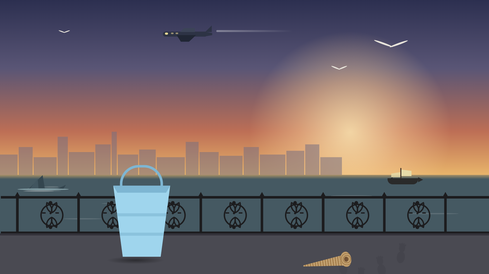
А1 · Уровень 1 — набережная, закат
5 деталей: самолёт в небе · чайка · кораблик · акулий плавник · ракушка. Сосуд — ведёрко на асфальте. Дальние чайки, зарево и мокрые следы — декор в фоне.
5 деталей: цветок в окне · скрепка · стикер на мониторе · улитка-игрушка · тапки. Сосуд — кружка на столе. Внимание: два жёлтых стикера в фоне — декор-обманки, не детали.
6 деталей: гусь из-за края · плакат «Пляжи Сызрани» · стикер на поручне · газета · перчатка · рыба на полу. Сосуд — сумка пассажира (запечена в фон). Лужа на полу больше не деталь.
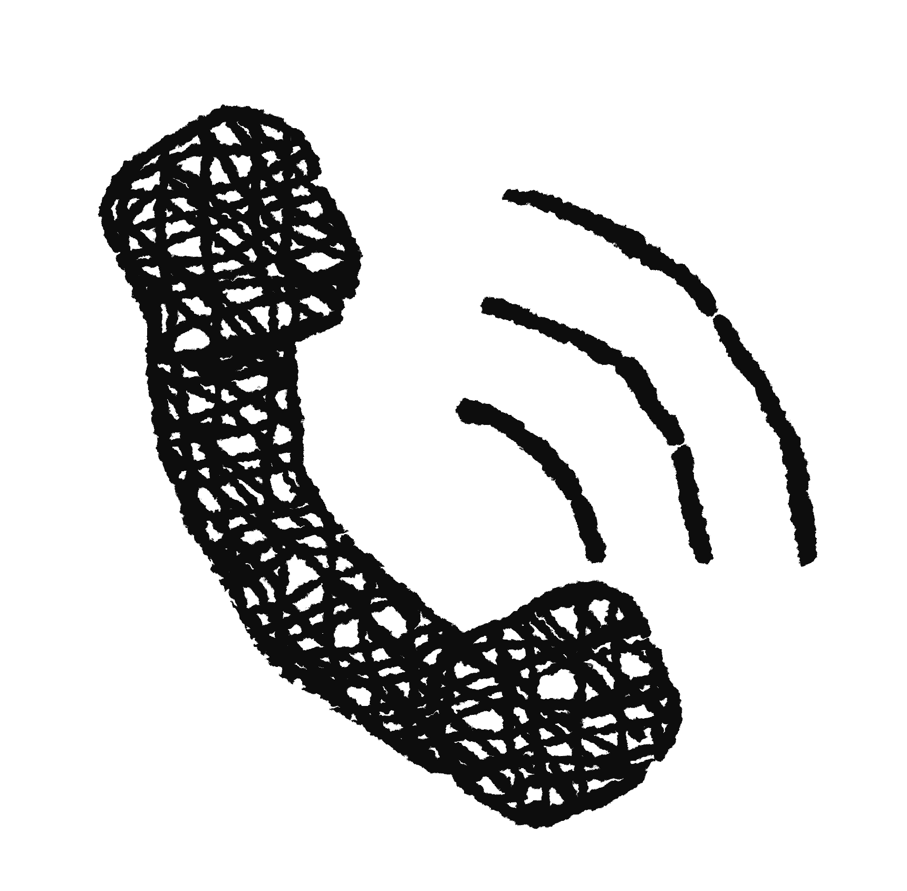
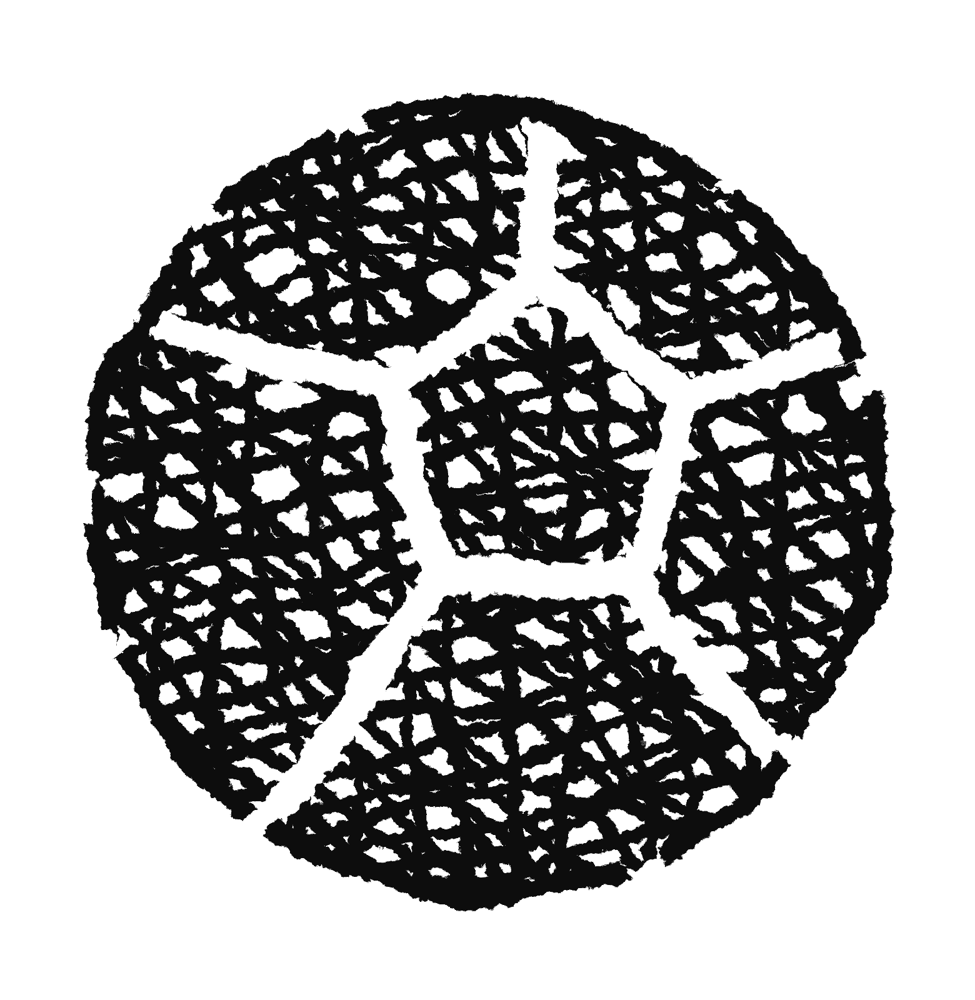
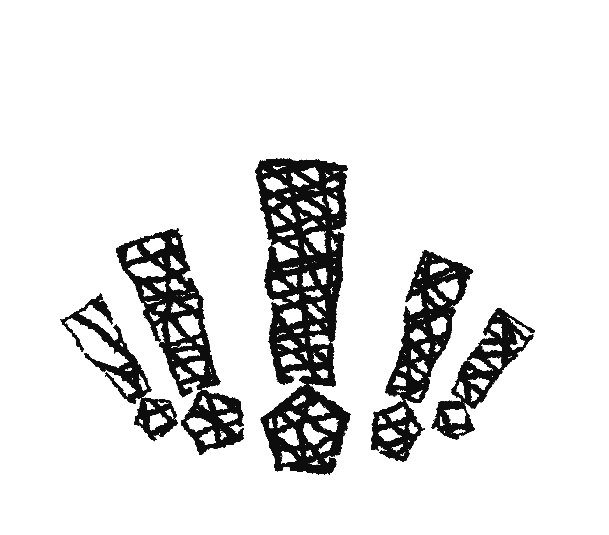
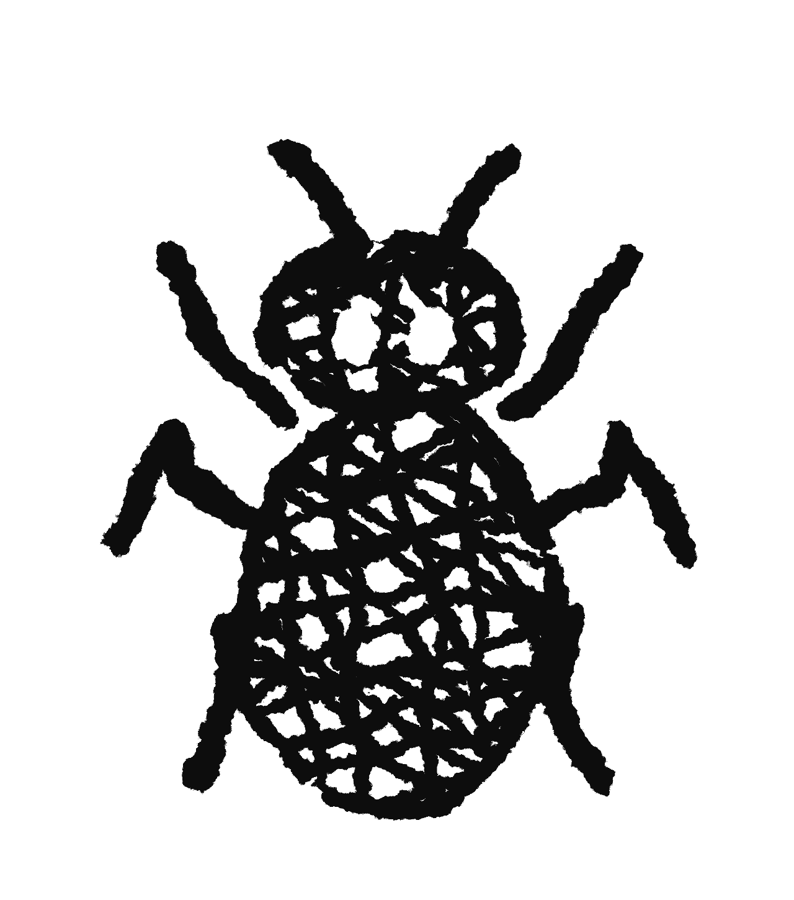
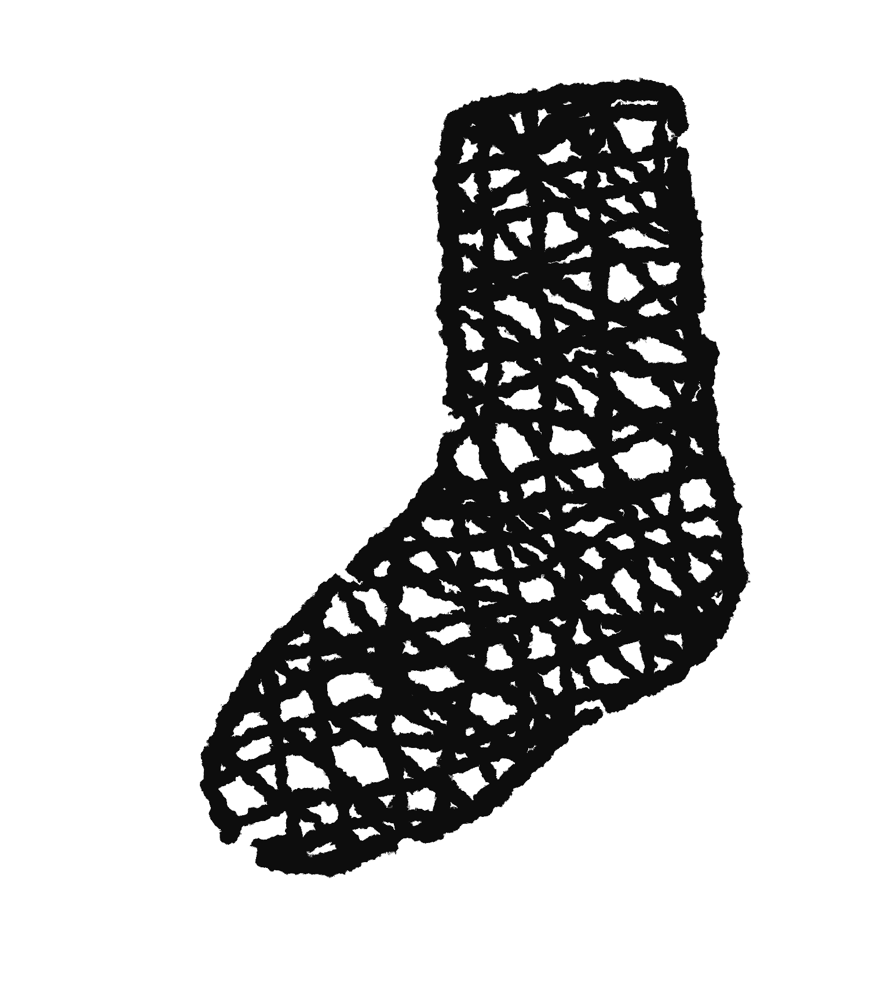
Мысли уровня: звонок · мяч · восклицания · жук · носок
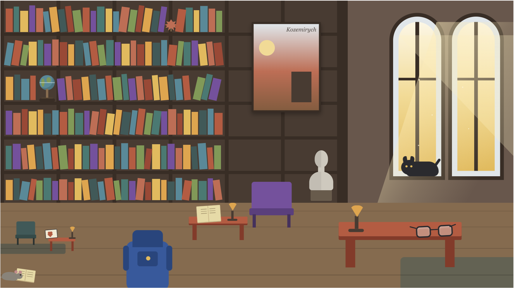
А4 · Уровень 4 — библиотека
8 деталей: солнце на постере · кот · бюст · раскрытая книга · лампа · очки · валентинка · мышь с книжкой. Сосуд — рюкзак на полу.
Тексты запечены в картинки — поверх ничего не пишем, старые формулировки из реестра выведены из игры. Рендеры 3840×2160 → даунскейл ×0.5.
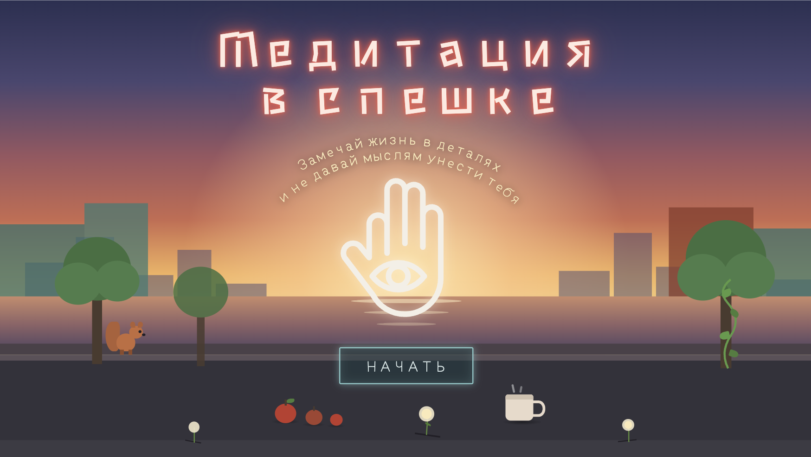
Э1 · Титул
«Медитация в спешке» · «Замечай жизнь в деталях и не давай мыслям унести тебя» · кнопка НАЧАТЬ. Старт по-прежнему двумя оборотами динамо — кнопка это призыв, а не клик (мыши на стойке нет).
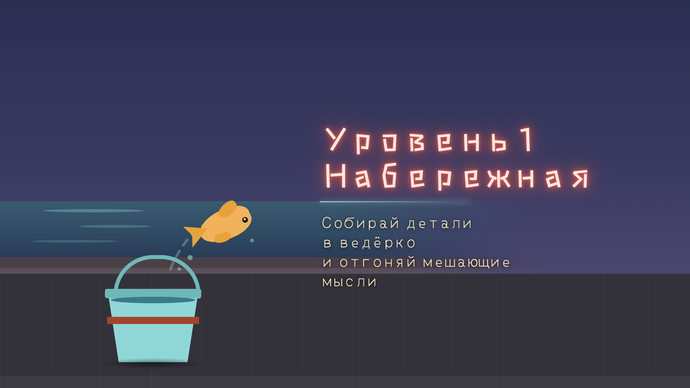
Э2 · Карточка уровня (пример — уровень 1)
«Уровень 1 · Набережная» · «Собирай детали в ведёрко и отгоняй мешающие мысли». Свои карточки у всех пяти: кружка · карман пассажира · рюкзак · дипломат. 2.5 с, автопереход.
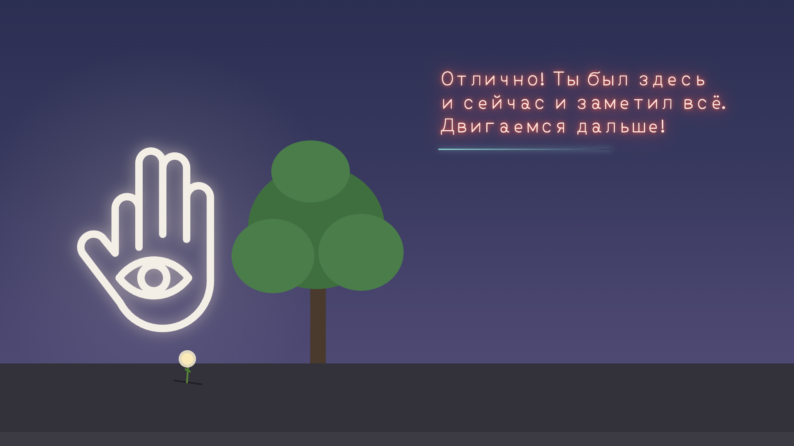
Э3 · Победа уровня
«Отлично! Ты был здесь и сейчас и заметил всё. Двигаемся дальше!» Перед этим экраном предлагаю оставить прежний бит награды: сосуд выезжает в центр и в нём лежит всё собранное (1.5 с) — иначе игрок ни разу не видит свою добычу.
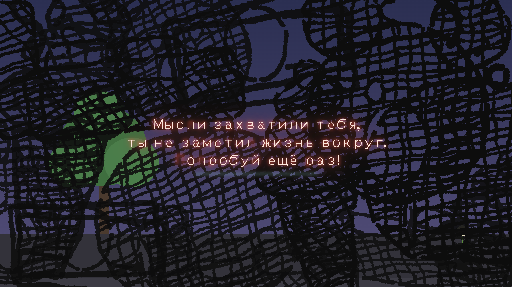
Э4 · Поражение
«Мысли захватили тебя, ты не заметил жизнь вокруг. Попробуй ещё раз!» Экран нарисован — вопрос «как гасить мысли на поражении» закрыт. Ретрай кручением: каждый оборот стирает ~10 % штриховки.
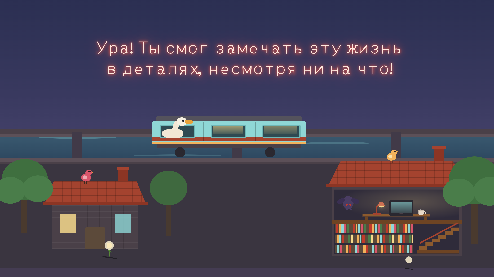
Э5 · Финал
«Ура! Ты смог замечать эту жизнь в деталях, несмотря ни на что!» Все локации в одном кадре. Через 20 с или по любому вводу — выход в лаунчер.
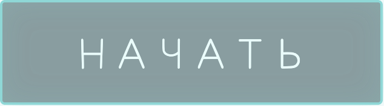
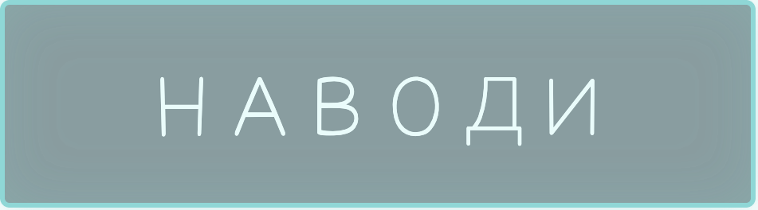
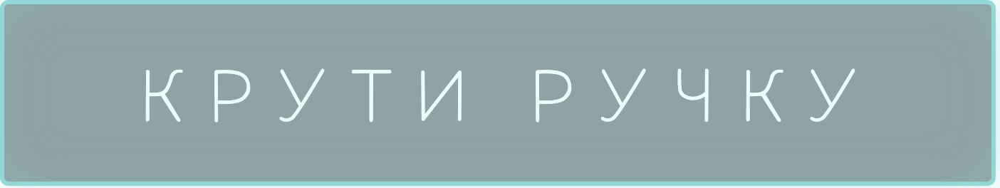
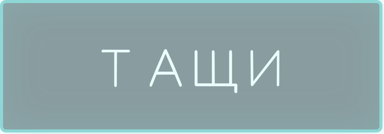
Э6 · Кнопки-подсказки
НАЧАТЬ — на титуле. НАВОДИ · КРУТИ РУЧКУ · ТАЩИ — три бита обучения на первом уровне. Не хватает четвёртой — «ТРЯСИ»: бит «отгони мысль» остался без кнопки, до неё показываем стрелку на джойстик без текста.
Фон уровня — свой трек на каждый: набережная · офис · метро · библиотека · город. «Медитация» — включается вместо фона, пока сбор идёт успешно; сорвал деталь — обратно фон. «Мысли» — играет всегда, громкость растёт с числом мыслей на экране.
Э7 · Звук
Семь треков в арт/звук/. Кроссфейды, потолок громкости и порог «сколько мыслей = максимум» вынесены на панель тюнинга — докрутите на плейтесте (MECHANICS §8).
Финал
23 · Финал — старый greybox, заменён экраном Э5
Все 5 сосудов с добычей за день. Любой ввод или 20 с тишины — чистый выход в лаунчер.
Справка для реализатора — раскладка зон игрового экрана
24 · Зоны и координаты (единые для всех уровней)
Z-порядок: сцена → детали → нить → мысли → сосуд → HUD. Точные правила и числа — SCREENS.md и MECHANICS.md.
1сосуд 240×150, центр (960,930)2HUD-слоты 5×72, от (60,40), шаг 883таймер-«солнце» (1800,100), r=604индикатор динамо (140,950), r=705зона сцены 0,0 · 1920×8106передний план 0,810 · 1920×270
Мысли размером S 180×140 / M 280×220 / L 420×320, дрейф к центру [tune]; прочность = пипсы под мыслью. Все параметры с пометками [tune]/[toggle] крутятся в превью-сценках (MECHANICS.md §7).
Все тексты игры — единый реестр
Где
Текст (точная строка)
Откуда
Когда показывается
Титул
Медитация в спешке / Замечай жизнь в деталях и не давай мыслям унести тебя / кнопка НАЧАТЬ
запечён в арт
всегда на титуле; старт — 2 оборота динамо
Карточка уровня 1
Уровень 1 · Набережная / Собирай детали в ведёрко и отгоняй мешающие мысли
запечён в арт
2.5 с перед уровнем
Карточка уровня 2
Уровень 2 · Офис / …в кружку…
запечён в арт
2.5 с перед уровнем
Карточка уровня 3
Уровень 3 · Метро / …в карман пассажира…
запечён в арт
2.5 с перед уровнем
Карточка уровня 4
Уровень 4 · Библиотека / …в рюкзак…
запечён в арт
2.5 с перед уровнем
Карточка уровня 5
Уровень 5 · Город / …в дипломат…
запечён в арт
2.5 с перед уровнем
Обучение, биты
картинки-кнопки: НАВОДИ → КРУТИ РУЧКУ → ТАЩИ; для «отгони мысль» кнопки нет — запрос дизайнеру
арт/кнопки/
уровень 1, таймер стоит
Победа уровня
Отлично! Ты был здесь и сейчас и заметил всё. Двигаемся дальше!
запечён в арт
после беата «сосуд с деталями»
Поражение
Мысли захватили тебя, ты не заметил жизнь вокруг. Попробуй ещё раз!
запечён в арт
до расчистки экрана кручением (или авто-ретрая)
Финал
Ура! Ты смог замечать эту жизнь в деталях, несмотря ни на что!
запечён в арт
после уровня 5, до выхода в лаунчер
Тексты внутри сцен
город: Pipo · DENNY WUZ HERE · B+K · HELLO stranger; библиотека: Kozemirych (постер); метро: «Отдыхайте на пляжах Сызрани» (плакат-деталь) · Kilroy (стикер-деталь); офис: «рост прибыли босса» (постер)
запечён в арт
часть фонов/спрайтов, отдельно не рендерятся
Мысли
без текста — чёрная маркерная штриховка
арт
всегда
Служебное
кнопка «в меню» — БЕЗ текста и подтверждений: мгновенный чистый выход в лаунчер из любого экрана
контракт стойки
всегда
Выведено из игры
«МЕДИТАЦИЯ В СПЕШКЕ» капслоком · «Крути ручку, чтобы начать» · «Собрано: …» · «Мысли захватили всё. Вдохни.» · «Ты заметил(а) всё. Даже в спешке.» · тексты обучения строками
—
заменено отрисованными экранами и кнопками 2026-08-07
25 · Реестр текстов
Других текстов в игре нет: ни своего меню, ни пауз, ни настроек — стойка запускает и завершает игру сама. Любой новый текст сначала добавляется сюда.